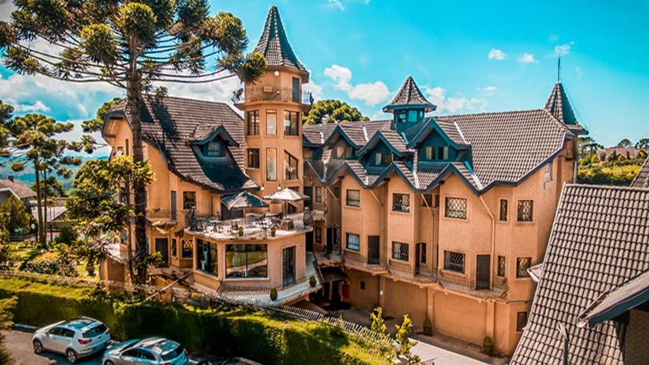
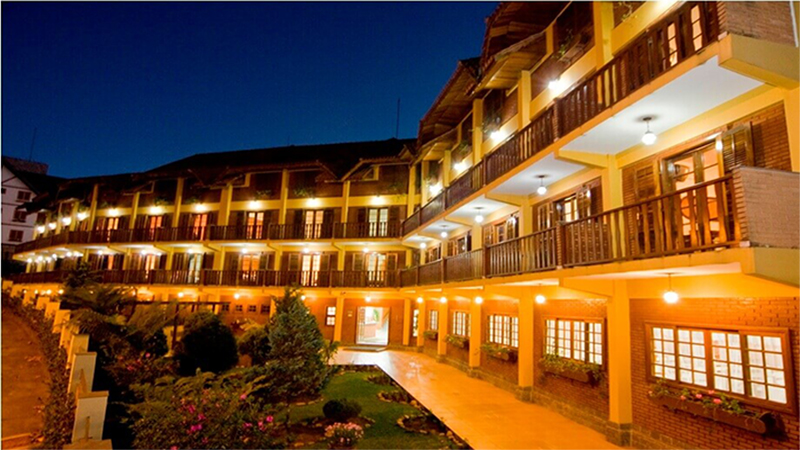
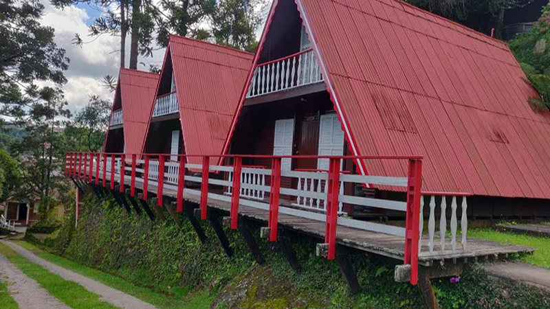

Achar hotéis em Campos do Jordão não é difícil, pois a cidade tem uma cena hoteleira para todos os gostos e bolsos. Sendo um dos principais destinos de turismo do Brasil, situado na Serra da Mantiqueira, a cidade é famosa por hotéis caros e de alto padrão, mas, acredite, é possível conseguir hospedagem barata em Campos do Jordão. Para ajudar a você achar o hotel ideal na cidade, fizemos esse Guia Completo de Hotéis em Campos do Jordão.
1.Castelo Nacional em Campos do Jordão

Endereço: Rua Roberto Pistrak, Nemirovsky,148, Campos do Jordão - SP,12460-000
Telefone: (12) 3662-4338
Diária: A partir de 195 reais
Descrição: Este hotel luxuoso em um castelo de estilo europeu rodeado por árvores fica a 2 km do Auditório Claudio Santoro e do Museu Felicia Leirner e a 4 km do mosteiro beneditino São João.
Os quartos descontraídos têm lareira, teto de madeira e/ou banheira de hidromassagem, além de frigobar, TV com tela plana e Wi-Fi gratuito. As suítes incluem lounge com sofá. Serviço de quarto disponível.
Buffet de café da manhã incluso. Entre as comodidades estão restaurante, bar, piscina coberta e sauna. Há também um salão principal luxuoso decorado com arte renascentista e uma área para banquetes com abóbada e teto de tijolos arqueados.
2.Hotel Garnier Campos do Jordão

Endereço: R. Joaquim Pinto Seabra, 420 - Vila Evereste, Campos do Jordão - SP
Telefone:12460-000•(12) 3663-3810
Diária: a partir de 130 reais
Descrição: Em meio às montanhas da Serra da Mantiqueira, este hotel em estilo campestre, construído com madeira e tijolos, fica a 3 km do Parque Floresta Encantada e a 6 km do Parque Estadual de Campos do Jordão.
3.Duas Quedas Park Hotel

Endereço:R. Canadá, 255 - Vila Britania, Campos do Jordão - SP, 12460-000
Telefone: (12) 3664-3245
Diária: a partir de 103 reais
Descrição: Em uma área arborizada com um lago e cachoeiras, este hotel casual em um complexo de chalés fica a 7 km das cachoeiras artificiais da Ducha de Prata, a 9 km dos labirintos de jardins exuberantes do Parque Amantikir e a 1 km da rodovia federal BR-383.